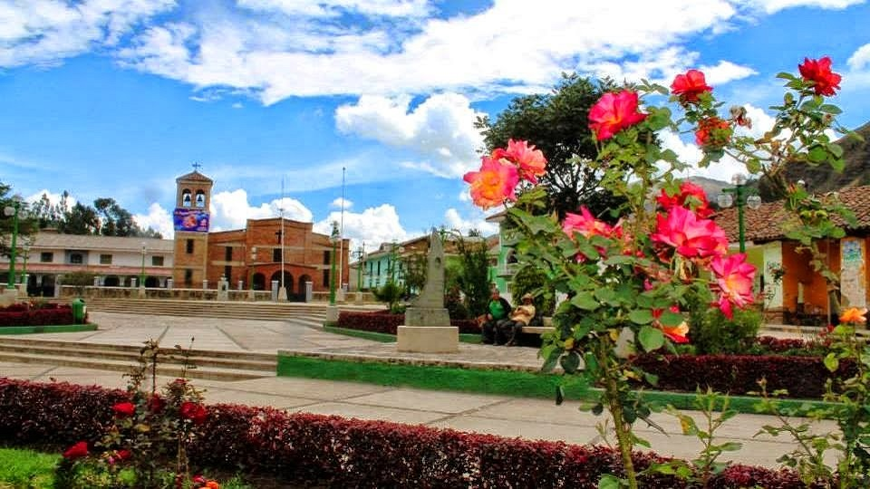
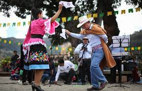
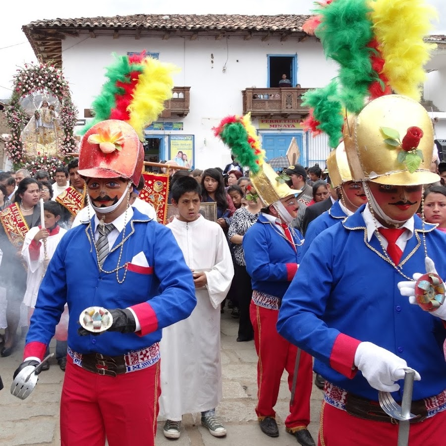
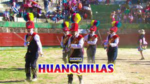
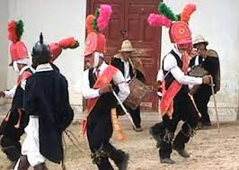
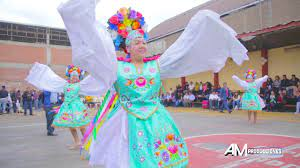

POMABAMBA
HISTORIA
Danzas típicas de Pomabamba
Danzas típicas de Pomabamba son aquellas que siguen alegrando, principalmente, las fiestas patronales de los diversos
pueblos de la provincia de Pomabamba. Se caracterizan por haber absorbido diversas contribuciones aportes de otros lugares,
lo que se confirma en sus diferentes elementos, que son expresiones supervivientes y vivas en todos los ámbitos
del Perú: Lima, sierra, selva, y hasta en el extranjero.

En la provincia de Pomabamba se practican 36 danzas.
¿Cuántas danzas típicas hay en Pomabamba?
¿Te justaría conocer mas sobre las danzas típicas ?
Chimaychi
- Origen.- Recopilando algunos datos de fuentes orales, podemos decir que el “chimaychi” tiene su origen en el corazón de la gente del campo en los primeros pobladores que se establecieron en Pomabamba. Ellos en los momentos de descanso después de una ardua actividad agrícola como en la siembra, en la cosecha, faenas comunales, etc., cuando el campesino después la tarea agrícola, animado por la chicha de jora y otras bebidas, empezaba a cantar y a silbar, manifestando de esta manera su mundo interior. Esta forma de expresar el sentimiento las llevó a las cuerdas del violín, del arpa y con la alegre interpretación de la flauta. Se comenta de generación en generación que la denominación “Chimaychi” surgió cuando en plena animación durante la fiesta se les decía a los demás “piimaychi” o “ichiiyay” que significa “para todos” y “pararse todos” respectivamente, durante el momento festivo.
De estos vocablos insinuatorios al jolgorio colectivo que se repetían constantemente, éste género musical con el tiempo se convierte en la palabra Chimaychi.
- Vestuario.- Se detalla en el vestuario de la mujer una “pintaybata”, que debajo de ella está la “llullimpa” o pollera granate o rosada, botines de cuero negro o marrón, llevan además el monillo o blusa de color rosado, celeste o lila. Sobre a cabeza utilizan un sombrero blanco de lana, con cinta roja.
El varón utiliza un terno negro de bayeta, además un sombrero blanco de lana ceñido con un hilo de colores con una bellota, un poncho negro, camisa blanca de manga larga, una faja multicolor, yanquis u ojotas de jebe.
- Música.- Ejecuta la melodía del “chimaychi” un violinista, un arpista y en algunas ocasiones también un flautista.
- 
-
Huanca
Su nombre proviene del quechua "wanka", piedra grande[8]Danza de origen colonial,[9] representa a los hidalgos españoles o criollos que se divertían danzando magistralmente después de los encuentros bélicos como parte de la celebración de las victorias obtenidas; en otras ocasiones solemnizaban las festividades religiosas. Quizá constituyan una mezcla de la danza nativa de los guerreros Huancas (wankas) del centro del país con los aires españoles, aunque es notoria su ascendencia europea por lo que también se le conoce como la "Danza de las espadas". Es posible que algunos pasos de su coreografía provengan de Cerro Pasco, que atrajo a tantos pomabambinos por la explotación de la minas, que empezó en 1905.
Su presencia en las calles, en el atrio de los templos, al frente de las capillas de Tayta Pancho o en casas particulares, concita algarabía. Decenas de espontáneos, los llamados seguilones ( qatiraq) van junto a los danzantes, algunos de ellos bailan en el cuadro final "qayqa cosecha", en ritmo de chimaychi, ejecutado con arpa y violín.
- 
-
Huanquilla
- Origen.- Podemos creer que es variante del huaridanza, por la similitud de los disfraces, pero, la diferencia es que el baile se ejecuta con el arpa, violín y arpa; no cuenta con el caporal como en el huaridanza. Su origen se remonta a la presencia de los soldados del Imperio Wari de Ayacucho, quienes, antes de salir a las sangrientas batallas ejecutaban sus danzas guerreras con sus armas originarias como la lanza, el arco, la flecha, la honda, etc., bebiendo la chicha de jora, pero el vestuario actual por el proceso de culturización ha ido estableciéndose al estilo español.
- Integrantes.- La cuadrilla está conformada por cinco varones jóvenes.
- Música.- Acompañan esta danza folklórica un flautista, un violinista y un arpista.
- 
Huaridanza
- Origen.- Es una danza guerrera. En realidad es aporte del gran Imperio Wari, cuya expansión pacífica abarcó por casi todo el Perú antiguo, desde Ecuador hasta Chile y Argentina, la presencia fue de amistad, la confraternidad, no era de imposición de armas, sino era una integración con danzas, música, canto, arte textil y arquitectura. Se dice que aproximadamente en el año 1913 a 1915 los pobladores del Barrio de Convento de Pomabamba, para solemnizar la fiesta de su Santo Patrón San Francisco de Asís o “Tayta Pancho”, concertaron con los devotos de la Provincia de Huari para traer de esa provincia a esta danza folklórica, al cual recibieron en forma apoteósica, bulliciosa y jubilar adquiriendo su propio estilo con el transcurrir de tiempo.
- Integrantes.- Es una cuadrilla de seis bailarines o danzantes varones, tres pallas que se ubican horizontalmente y delante de ellos están dos guiadores y un caporal.
- Disfraces.- El caporal, viste un pantalón de color blanco, polainas de color negro o marrón, chalina blanca, casco al es tilo europeo, máscara negra, levita negra a la usanza colonial. Lleva un látigo o chicote. Las pallas o guiadores usan faja larga, el chaleco azul o negro, camisa blanca de manga larga, una banda con adornos, el pantalón negro de bayeta, con cascabeles de bronce en la pantorrilla. En la cabeza llevan una monterilla de color rojo con tres plumajes de colores con un rosario de bronce y una máscara. En la mano empuñan la espada de metal y en la otra un broquel multicolor.
- Música.- Amenizan este baile dos diestros cajeros con sus bombos, con los mismos, simultáneamente las melodías son ejecutadas con las flautas chicas, delgadas hechas a base de carrizo.
- 
-
Anaca
Su nombre procede del protoquechua hanaqkaq ( de la parte alta en contraposición a los yuncas, de la zona baja).Es una danza ejecutada por seis mujeres jóvenes o ñustas[3] (denominación Inca); que ante la mirada de los espectadores, recorren la Plaza de Armas y principales calles de la ciudad, en ciertas ocasiones intervienen una capitana y dos guías conocidos como Yuncas que sirven como dirigentes de las evoluciones que realizan las anacas, y se encargan de custiodar solícitamente a las bailarinas de los arrebatos de algún espectador que intente propasarse. La danza ejecuta su coreografía al compás de una banda musical, que inunda los desplazamientos y las escenas dancísticas de homenaje o de reverencia, con una música alegre que hasta los mirones y seguidores, sienten picazón en los pies o ganas de bailar.
Sobre el nombre, podría provenir del término hanakaq (de arriba, en referencia al ámbito geográfico; pues representaban a los llakwas, en contraposición a los waris), o bien por el uso de 'anaku', vestimenta nativa.[4]
- 